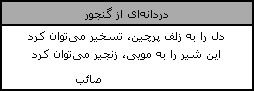
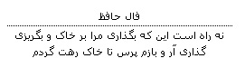
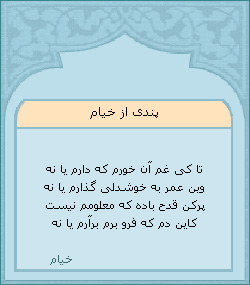
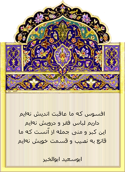
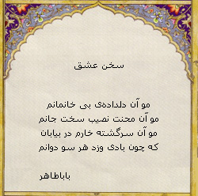
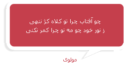
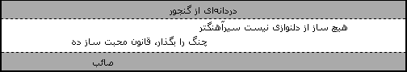

به کمک کدهای گنجور میتوانید یک بیت شعر تصادفی به صفحات وبلاگ یا سایت خود اضافه کنید. بازدیدکنندگان سایت شما میتوانند با کلیک بر روی نام شاعر در بلوک نمایش شعر، متن کامل شعر را در گنجور بخوانند. برای اضافه کردن کد نمایش شعر به صفحات سایت یا وبلاگتان محل درج کد در قالب سایت یا وبلاگ خود را مشخص کنید. سپس یکی از قالبهای زیر را انتخاب، کپی و در محل مورد نظر درج نموده، قالب وبلاگ یا سایت خود را ذخیره کنید. توضیحات بیشتر را در این صفحه بخوانید. فهرست نمونه سایتهایی را که از این امکان استفاده میکنند در این صفحه ببینید.
قالب مورد نظر خود را انتخاب کنید:
      